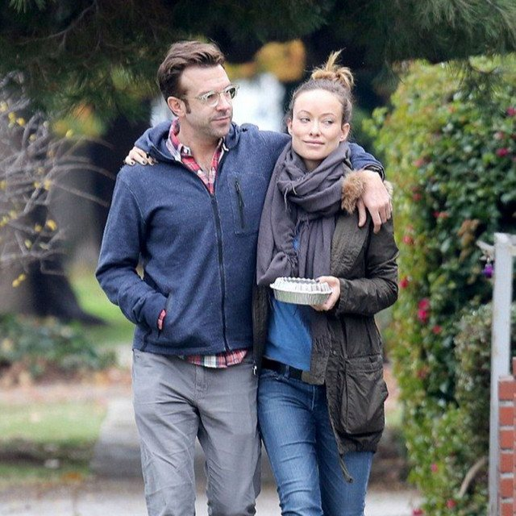
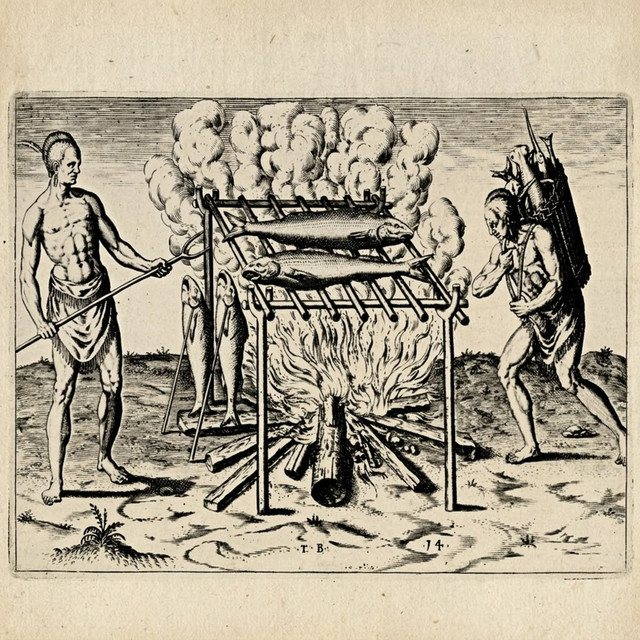
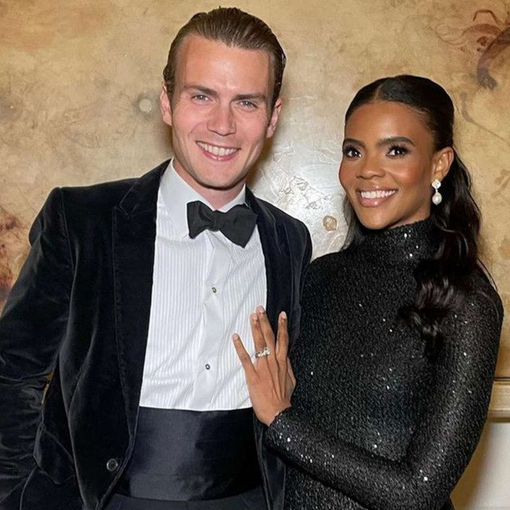

The Eclectic Polymath Podcast · Archive
#103 Olivia Wilde, Jason Sudeikis, and the Anatomy of a Public Breakup

About this episode
Celebrity breakups are rarely just private relationships ending. Once lawyers, studios, former employees, fan communities, and the press enter the picture, intimacy becomes evidence and personal conflict becomes public entertainment.
This episode looks at the relationship and separation of Olivia Wilde and Jason Sudeikis, from their decade-long partnership and family life to the custody dispute, the CinemaCon legal service, and the “special salad dressing” story that became one of the strangest viral details in recent celebrity culture. It also examines how Harry Styles became part of the narrative and how competing accounts transformed the breakup into an ongoing media event.
Key points
- Celebrity breakups are rarely just private relationships ending.
- This episode looks at the relationship and separation of Olivia Wilde and Jason Sudeikis, from their decade-long partnership and family life to the custody dispute, the CinemaCon legal service, and the “special salad dressing” story that became one of the strangest viral details in recent celebrity culture.
- It also examines how Harry Styles became part of the narrative and how competing accounts transformed the breakup into an ongoing media event.
More like this
 #218 Nicole Avant: Power, Marriage, and the Family WayOctober 17, 202650:31
#218 Nicole Avant: Power, Marriage, and the Family WayOctober 17, 202650:31 #217 A Different World: The Sitcom That Refused to EndOctober 16, 202651:08
#217 A Different World: The Sitcom That Refused to EndOctober 16, 202651:08
#147 American Barbecue: Indigenous Roots, Black Pitmasters, and the Secret History of Southern Smokehouse CultureAugust 25, 202641:18
#141 George Farmer: British Wealth, American Media, and Transatlantic Conservative PowerAugust 23, 202627:02